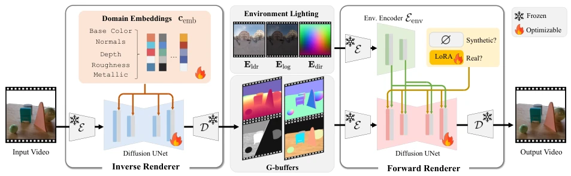
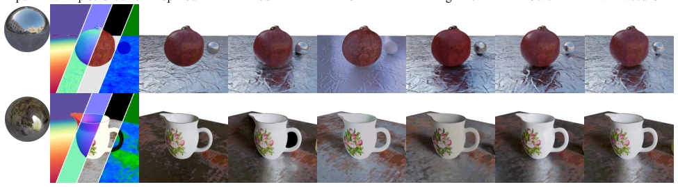
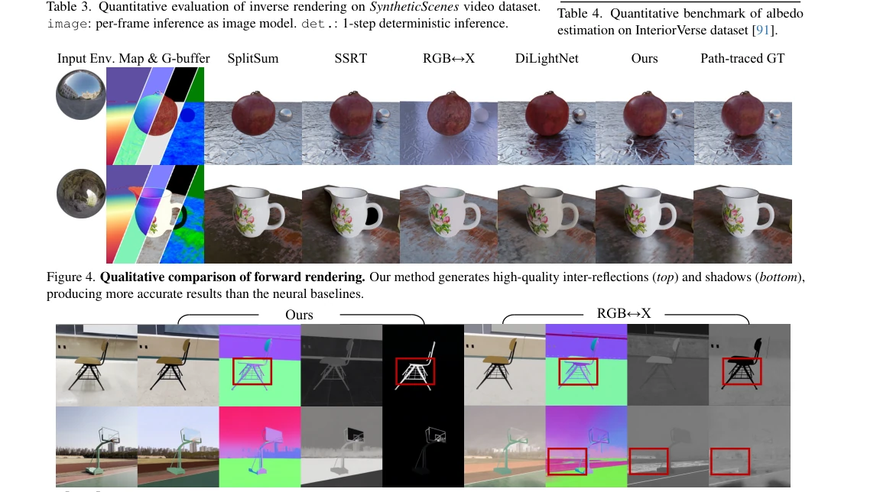
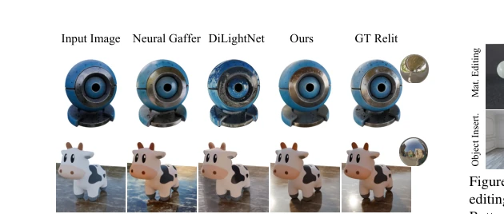
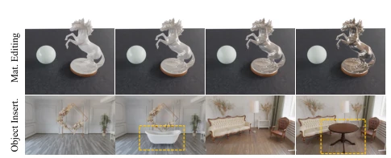

DiffusionRenderer: Neural Inverse and Forward Rendering with Video Diffusion Models
Ruofan Liang, Zan Gojcic, Huan Ling, Jacob Munkberg, J. Hasselgren, Zhihui Lin abspdf
论文点评Review
这篇论文把视频扩散模型（VDM）硬塞进了渲染管线，试图用“生成式先验”替代传统的物理路径追踪。NVIDIA 团队这次没搞复杂的 3D 重建，而是直接让模型“脑补”光照和材质。好处是快，能处理单视频输入；坏处是本质还是黑盒，物理一致性全靠数据拟合。虽然号称“通用”，但离真正的物理引擎还有距离，更像是一个高级的滤镜。不过，能把单视频变成可编辑的 G-buffer 并反哺真实世界数据，这招“曲线救国”确实聪明。但要注意，自动标注的真实数据可能传播误差，且推理速度仍受限于扩散模型，离实时应用尚有距离。此外，模型对输入 G-buffer 的噪声容忍度较高，这是相比传统 PBR 的一大优势，但这也意味着它可能“画蛇添足”生成不存在的细节。
This paper forcibly integrates Video Diffusion Models (VDM) into the rendering pipeline, attempting to replace traditional physical path tracing with 'generative priors'. The NVIDIA team did not pursue complex 3D reconstruction this time, but instead directly let the model 'hallucinate' lighting and materials. The benefit is speed, capable of handling single video input; the drawback is it remains essentially a black box, with physical consistency relying entirely on data fitting. Although claimed to be 'general', it is still far from a true physics engine, more like an advanced filter. However, the strategy of converting a single video into an editable G-buffer and feeding back real-world data, this 'indirect approach' is indeed clever. But note that auto-annotated real data may propagate errors, and inference speed is still limited by diffusion models, remaining distant from real-time applications. Furthermore, the model has high noise tolerance for input G-buffer, which is a major advantage compared to traditional PBR, but this also means it may 'over-generate' creating non-existent details.
Traditional physically based rendering (PBR) [59] relies on precise 3D geometry and materials, which are difficult to obtain in reality. Existing neural rendering methods such as RGB↔X [83] are mostly image-based, lacking video temporal consistency, and have limited editing capabilities. Neural Gaffer [30] can relight, but relies on domain-specific data. DiffusionRenderer aims to solve the problems of missing geometry and difficult lighting estimation in real scenes, implicitly learning light transport through video diffusion models, achieving inverse and forward rendering without explicit path tracing, supporting applications such as relighting and material editing. Existing methods often require multi-view or specific capture setups, limiting practicality. Furthermore, traditional methods are extremely sensitive to G-buffer noise; once geometry estimation is inaccurate, rendering results collapse, while this paper's method avoids this issue through a data-driven approach.
The framework includes two VDM modules: inverse rendering and forward rendering. Inverse rendering encodes the input video into latent space, generating G-buffer attributes such as normal, depth, and albedo step-by-step via domain embedding. Forward rendering utilizes the G-buffer and environmental lighting as conditions, injecting lighting information through cross-attention layers to generate realistic videos. Lighting encoding uses a dedicated encoder to extract multi-resolution features, solving the HDR and latent space mismatch problem. In terms of training strategy, first train the inverse renderer on synthetic data, then use it to auto-annotate real videos (e.g., DL3DV10k), finally train the forward renderer combining synthetic and real data, and introduce LoRA during real data training to bridge domain gaps. Specifically, lighting conditions are encoded into three equirectangular maps: Reinhard tone-mapped LDR map, log-space intensity map, and direction encoding map. The inverse renderer uses independent domain embeddings when generating each attribute to ensure generation quality. The forward renderer uses optimizable LoRA parameters during the real data training phase to adapt to the distribution of real scenes, thereby improving the visual quality of relighting.

Figure 3. Method overview. Given an input video, the neural inverse renderer estimates geometry and material properties per pixel. It generates one scene attribute at a time, with the domain embedding indicating the target attributes to generate (Sec. 4.2). Conversely, the neural forward renderer produces photorealistic images given lighting information, geometry, and material buffers. The lighting condition is injected into the base video diffusion model through cross-attention layers (Sec. 4.1). During joint training with both synthetic and real data, we use an optimizable LoRA for real data sources (Sec. 4.4).
Evaluated on SyntheticScenes, InteriorVerse, and DL3DV10k. Metrics include PSNR, SSIM, LPIPS, and material error. Results show that this method outperforms baselines such as SSRT, SplitSum, RGB↔X, and DiLightNet on inverse rendering, forward rendering, and relighting tasks. Ablation studies indicate that the video model outperforms frame-wise image models, the dedicated environment encoder provides significant improvement, and joint training with real data combined with LoRA effectively improves relighting quality in real scenes. Quantitative data shows that on SyntheticScenes, the PSNR of this method is better than RGB↔X by about 3dB. In the inverse rendering task, the prediction error of the video model for metal and roughness attributes is significantly reduced. Furthermore, 1-step deterministic inference is fast but details are slightly blurry, while multi-step stochastic inference is more suitable for relighting tasks.

Figure 4. Qualitative comparison of forward rendering. Our method generates high-quality inter-reflections (top) and shadows (bottom), producing more accurate results than the neural baselines.

Figure 5. Qualitative comparison of inverse rendering. We compare with RGB↔X [83] on DL3DV10k dataset. Both methods work well on indoor scenes, while our method predicts finer details in thin structures and more accurate metallic and roughness channels (top), likely benefiting from our curated training data. As compared to RGB↔X, our method generalizes better to outdoor scenes (bottom row).

Figure 6. Qualitative comparison of relighting. Our method pro- duces more accurate specular reflections compared to the baselines.

Figure 8. Image editing applications. Top: Realistic material editing, adjusting the sphere’s roughness and the horse’s metallic. Bottom: Object insertion of a bathtub and table into scene images.